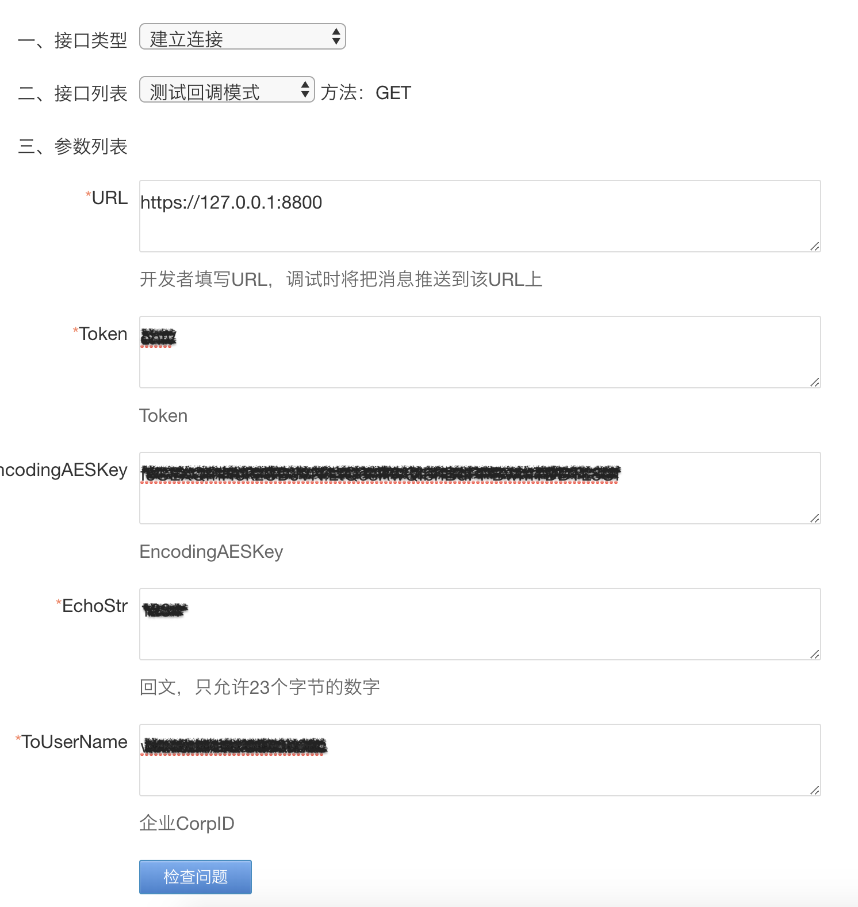

背景
销售用企业微信添加客户后，系统自动发送问卷，客户填完问卷后将客户数据与销售人员数据一起发送给后台。
总体流程
企微接口
nodejs+express
let express = require("express");
const https = require('https');
const path = require("path");
let app = express();
app.set('view engine','ejs');
app.listen(8800);
回调配置
https://work.weixin.qq.com/api/doc/90000/90135/90930
测试回调模式
https://work.weixin.qq.com/api/devtools/devtool.php

回调服务需要作出正确的响应才能通过URL验证
https://github.com/beary/wx-ding-aes
const aes = require('wx-ding-aes')
app.get('/', function (req, res) {
wxVerify(req, res)
})
async function wxVerify(req, res) {
let EncodingAESKey = 'f5CEXQmHokzCDJVNiLtQosRwQIbnBdPPBwmTDDTL8Uf'
let msg_encrypt = req.query.echostr
let aes_msg = msg_encrypt && aes.decode(msg_encrypt, EncodingAESKey)
res.send(aes_msg)
}
添加外部联系人事件
https://www.npmjs.com/package/express-xml-bodyparser
https://www.jianshu.com/p/87d5f4987abf
const xmlparser = require('express-xml-bodyparser')
app.use(xmlparser())
https://work.weixin.qq.com/api/doc/90000/90135/92130
const convert = require('xml-js')
app.post('/', function (req, res) {
wxAddUser(req, res)
})
async function wxAddUser(req, res) {
let msg_encrypt = req.body.xml.encrypt[0]
let aes_msg = msg_encrypt && aes.decode(msg_encrypt, EncodingAESKey)
const aes_msg_string = convert.xml2json(aes_msg, { compact: true, spaces: 4 })
const aes_msg_json = JSON.parse(aes_msg_string)
const welcomeCode = aes_msg_json.xml.WelcomeCode && aes_msg_json.xml.WelcomeCode._cdata
const UserID = aes_msg_json.xml.UserID && aes_msg_json.xml.UserID._cdata
const ExternalUserID = aes_msg_json.xml.ExternalUserID && aes_msg_json.xml.ExternalUserID._cdata
console.log('>>> welcomeCode', welcomeCode)
console.log('>>> UserID', UserID)
console.log('>>> ExternalUserID', ExternalUserID)
res.send(aes_msg)
}
获取ACCESS_TOKEN
https://work.weixin.qq.com/api/doc/90000/90135/91039
开发者需要缓存access_token，用于后续接口的调用（注意：不能频繁调用gettoken接口，否则会受到频率拦截）。当access_token失效或过期时，需要重新获取。
function getAccessToken() {
return new Promise((resolve, reject) => {
let getAccessUrl = `https://qyapi.weixin.qq.com/cgi-bin/gettoken?corpid=${appID}&corpsecret=${appSerect}`
//获取当前时间
const currentTime = new Date().getTime()
if (accessTokenJson.access_token === '' || accessTokenJson.expires_time < currentTime) {
console.log('---- get new token ----')
https
.get(getAccessUrl, (res) => {
var resText = ''
res.on('data', (d) => {
resText += d
})
res.on('end', () => {
var resObj = JSON.parse(resText)
accessTokenJson.access_token = resObj.access_token
accessTokenJson.expires_time = new Date().getTime() + (parseInt(resObj.expires_in) - 200) * 1000
//更新本地存储的
fs.writeFile('./access_token.json', JSON.stringify(accessTokenJson), function (err) {
if (err) {
console.error(err)
} else {
console.log('---- write in new token success ----')
}
})
resolve(resObj.access_token)
})
})
.on('error', (e) => {
console.error(e)
})
} else {
console.log('---- read old token ----')
resolve(accessTokenJson.access_token)
}
})
}
发送新客户欢迎语
https://work.weixin.qq.com/api/doc/90000/90135/92137
app.use(express.static('img')) //定义静态文件夹
async function sendWelcomeMessage(CALLBACK_CODE, TOKEN) {
const welcomeMsgUrl = `https://qyapi.weixin.qq.com/cgi-bin/externalcontact/send_welcome_msg?access_token=${TOKEN}`
return new Promise((resolve, reject) => {
const options = {
headers: { 'Content-Type': 'application/json' },
method: 'POST',
body: JSON.stringify({
welcome_code: CALLBACK_CODE,
link: {
title: '消费者调研问卷',
picurl: `${host}/icon.png`,
desc: ' ',
url: 'http://wxquestionnaire.xxx.com/',
},
}),
}
fetch(welcomeMsgUrl, options).then((res) => {
res
.json()
.then((json) => {
console.log(json)
resolve(json)
})
.catch((error) => {
console.error(error)
reject(error)
})
})
})
}
获取客户及用户详情
https://work.weixin.qq.com/api/doc/90000/90135/90196
https://work.weixin.qq.com/api/doc/90000/90135/92114
function getClientInfo(client_id, TOKEN) {
return new Promise((resolve, reject) => {
const getClientUrl = `https://qyapi.weixin.qq.com/cgi-bin/externalcontact/get?access_token=${TOKEN}&external_userid=${client_id}`
https
.get(getClientUrl, (res) => {
let resText = ''
res.on('data', (d) => {
resText += d
})
res.on('end', () => {
resolve(JSON.parse(resText))
})
})
.on('error', (e) => {
console.error(e)
reject(e)
})
})
}
问卷部分
http://wxquestionnaire.xxx.com/

接收数据
解析application/json https://www.jianshu.com/p/80b502efe255
const bodyParser = require('body-parser')
app.use(bodyParser.json({ limit: '1mb' })) //body-parser 解析json格式数据
app.use(
bodyParser.urlencoded({
//此项必须在 bodyParser.json 下面,为参数编码
extended: true,
})
)
设置允许跨域访问该服务 https://blog.csdn.net/qq_34545192/article/details/80177362
app.all('*', function (req, res, next) {
res.header('Access-Control-Allow-Origin', '*');
res.header('Access-Control-Allow-Headers', 'Content-Type');
res.header('Access-Control-Allow-Methods', '*');
res.header('Content-Type', 'application/json;charset=utf-8');
next();
});
缓存机制：为了避免同时读写csv导致数据覆盖，先将数据缓存在本地，每分钟定时读写csv
app.post('/postQuestionnaire', function (req, res) {
saveData(req, res)
})
let tempData = [];
async function saveData(req, res) {
if (Object.keys(req.body).length) {
res.send({ status: 'success' })
tempData.push(req.body);
} else {
res.send({ status: 'failure' })
}
}
定时写入数据
Nodejs定时任务 https://www.jianshu.com/p/8d303ff8fdeb
const schedule = require('node-schedule')
const scheduleCronstyleSaveData = () => {
//每分钟0秒触发:
schedule.scheduleJob('0 * * * * *', () => {
console.log('>>> scheduleCronstyleSaveData: ' + new Date())
fs.readFile('data.csv', 'utf8', function (err, existData) {
let csvContent = ''
if (err) {
console.error(err)
const title = Object.keys(csvColumn)
csvContent = '\ufeff' + title.join(',') + '\n'
console.log('---- create new csv ----')
} else {
console.log('---- existData ----')
csvContent = existData
}
let count = 0;
tempData.forEach(item => {
const newData = formatData(item, csvColumn)
count++;
csvContent += Object.values(newData).join(',') + '\n'
});
fs.writeFile('./data.csv', csvContent, function (err) {
if (err) {
console.error(err)
} else {
// tempData = [] 不能直接置空，写入csv的时差可能正有数据写入
tempData = tempData.slice(count);
console.log('---- write in new data success ----')
}
})
})
})
}
scheduleCronstyleSaveData();
定时发送数据
node 使用 ssh2-sftp-client 实现 FTP 的文件上传和下载功能 https://www.npmjs.com/package/ssh2-sftp-client
const Client = require('ssh2-sftp-client');
const sftpOption = require('./sftp_option')
const scheduleCronstylePostData = () => {
//每小时0分30秒触发:
schedule.scheduleJob('0 30 * * * *', () => {
console.log('>>> scheduleCronstylePostData: ' + new Date())
const sftp = new Client();
sftp.connect(sftpOption).then(() => {
return sftp.put('./data.csv', '/Dabao questionaire_UAT/data.csv');
}).then(() =>{
console.log("---- Upload finish ----");
sftp.end()
// 删除文件
fs.unlink('data.csv',function(error){
if (error){
console.error(error);
return false;
}
console.log('---- delete csv success ----');
})
}).catch((err) => {
console.error(err);
});
})
}
scheduleCronstylePostData();
静态资源访问权限
https://blog.csdn.net/x746655242/article/details/53318464
中间件有很多用处，可以做权限的配置，访问前的各种参数校验，
const path = require("path");
app.use(function(req,res,next){
var static= /^(\/data)/g;
if (static.test(req.path)) {
console.log('>>> user: ', req.query.user);
console.log('>>> password: ', req.query.password);
if (req.query.user!=="yoga" || req.query.password!=="123") {
console.log('---- illegal request ----');
return res.end('请求非法');
}
}
next()
});
app.use('/data',express.static(path.join(__dirname,'data')));
// http://localhost:27999/data/total_data.csv?user=yoga&password=123
发送文件
- res.sendFile (chrome在浏览器里打开，ie下载)
app.get('/data', function (req, res, next) {
var options = {
root: __dirname + '/data/',
dotfiles: 'deny',
headers: {
'x-timestamp': Date.now(),
'x-sent': true
}
};
var fileName = 'total_data.csv';
res.sendFile(fileName, options, function (err) {
if (err) {
next(err);
} else {
console.log('>>> Sent:', fileName);
}
});
});
- res.download (所有浏览器都下载)
app.get('/data', function (req, res, next) {
const fileName = 'total_data.csv';
res.download(`./data/${fileName}`, fileName, function (err) {
if (err) {
next(err);
} else {
console.log('>>> Sent:', fileName);
}
});
});
nodejs解析csv成json
const parse = require('csv-parse/lib/sync')
app.get('/data', function(req, res, next) {
fs.readFile('./data/total_data.csv', 'utf8', function (err, existData) {
if (err) {
console.error(err)
res.send({});
} else {
const records = parse(existData, {
columns: true,
skip_empty_lines: true
})
res.send(records);
}
})
});
Microsoft flow
创建定时任务，每小时通过接口获取数据，创建csv并存入sharepoint

压力测试
https://blog.csdn.net/yaorongke/article/details/82799609


Mac运行jmeter：
cd bin
sh jmeter
https://blog.csdn.net/u012972942/article/details/80392792